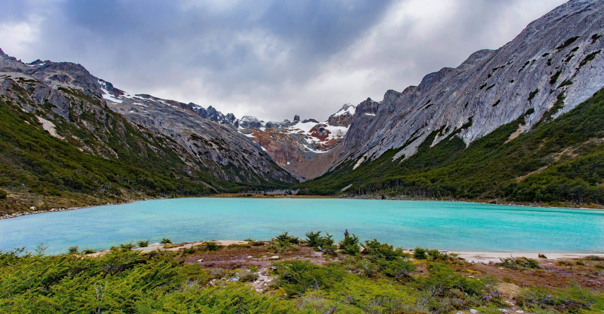

Patagônia
A Patagônia é uma região localizada no extremo sul da Argentina e do Chile, conhecida por suas paisagens impressionantes. Entre montanhas, geleiras, lagos e grandes campos, destaca-se pela natureza preservada e pela diversidade de animais. Entre seus principais atrativos estão o Glaciar Perito Moreno, o Parque Nacional Torres del Paine e a cidade de Ushuaia.
Não há apenas paisagens deslumbrantes, mas também uma rica fauna e flora, tornando a Patagônia um destino ideal para os amantes da natureza e da aventura.